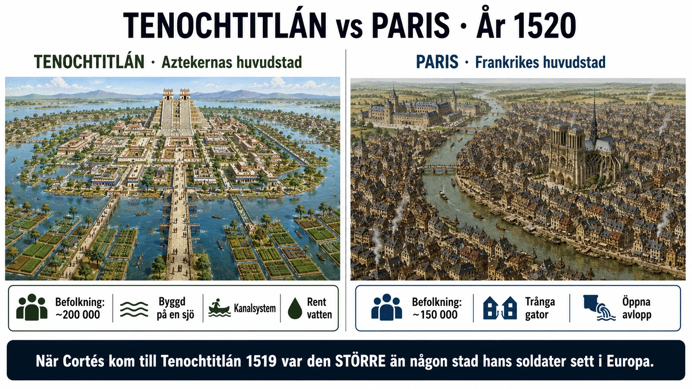

En stad som chockade conquistadorerna
I november 1519 stod den spanska conquistadoren Hernán Cortés och hans män på en bergsklippa söder om en stor sjö. De hade marscherat genom Mexico i månader. Nu såg de framför sig något som tog andan av dem.
I sjön Texcoco — en vidsträckt insjö som tog upp större delen av dalen — låg en stad. Inte vid sjöns kant. I sjön. Staden var byggd på öar och konstgjorda landstycken, sammanbunden med fastlandet genom långa breda vägar. Pyramider och tempel stack upp över taken. Tre väldiga causeways — breda upphöjda gator över vattnet — ledde in till staden.
Detta var Tenochtitlán, Aztekrikets huvudstad. Det var en av världens största städer.
Cortés sekreterare, Bernal Díaz del Castillo, skrev senare i sina memoarer: "Vi visste inte vad vi skulle säga, eller om det vi såg var verkligt. På ena sidan, på land, fanns stora städer, och i sjön ännu fler — och vi såg vägarna som var raka och välplanerade och ledde rakt in i Mexiko. Vi kände oss förbluffade och sa till varandra att det var likt de förtrollade saker man läser om i Amadis-böckerna."
(Amadis var en mycket populär riddarroman på 1500-talet, full av magiska städer och fantasivärldar.)
Det var ingen liten observation. Spanjorerna jämförde det de såg med fantasiböcker — för att de inte hade något verkligt att jämföra med. Tenochtitlán var större och mer välorganiserad än någon spansk stad de hade sett.
Hur stor var staden egentligen?
Tenochtitlán hade omkring 200 000 invånare när Cortés kom dit 1519. För att sätta detta i perspektiv:
- Paris hade ungefär 200 000
- London hade ungefär 60 000
- Sevilla, Spaniens största stad, hade ungefär 60 000
- Konstantinopel, mer än någon stad i Europa, hade ungefär 400 000
Tenochtitlán var alltså i klass med Europas största städer — och större än de flesta. Och det är bara själva Tenochtitlán. Hela storstadsregionen runt sjön Texcoco hade kanske en miljon invånare totalt.
För spanjorerna, som kom från en kontinent som de trodde var civilisationens centrum, var detta omöjligt att förstå.
Vad fanns i staden?
Tenochtitlán var inte bara stor. Den var avancerad.
Akvedukter. Färskt vatten leddes in i staden genom långa akvedukter från källor i bergen söderut. Detta var nödvändigt eftersom sjövattnet var bräckt.
Chinampas — flytande trädgårdar. Aztekerna hade utvecklat en unik jordbruksteknik. De byggde långsmala "öar" i sjöns grunda områden genom att fästa upp lager av vass och lera. På dessa odlade de majs, bönor, squash, paprika och blommor. Skördarna var enorma — chinampas är fortfarande en av de mest produktiva jordbruksformer människan utvecklat.
Marknader. Den största marknaden, Tlatelolco, hade enligt Cortés egna ord upp till 60 000 människor om dagen som handlade. Här såldes allt — guld och silver, ädelstenar, fjädrar, slavar, mat, kläder, vapen, läkemedel. Cortés skrev att det var större än marknaderna i Salamanca i Spanien.
Tempel. Det centrala templet, Templo Mayor, var en pyramid omkring 60 meter hög. Den hade dubbla skrin — ett tillägnat Tlaloc, regnguden, och ett till Huitzilopochtli, krigsguden. Pyramider var inte bara religiösa byggnader utan också astronomiska observatorium.
Palats. Den aztekiske kejsaren Moctezuma II bodde i ett palats med över 100 rum. Det fanns dansgolv, badbassänger, fågelhus och en zoo med djur från hela Aztekriket.
Skolor. Aztekerna hade ett system av allmän utbildning för pojkar. Det fanns två typer av skolor — telpochcalli för vanliga pojkar (krigsträning, hantverk) och calmecac för adelns söner (astronomi, retorik, historia, religion). Få samhällen i Europa hade liknande allmän utbildning.
Hur Tenochtitlán var organiserad
Aztekriket var inte ett vilt samhälle. Det var ett välorganiserat statligt välde.
Riket var indelat i fyra distrikt med en kejsare (kallad tlatoani) i toppen. Under kejsaren fanns en högsta råd av adelsmän. Det fanns en byråkrati som samlade in tribut från erövrade folkgrupper. Det fanns ett rättssystem med domstolar. Det fanns ett kalendersystem mer precist än det europeiska julianska — astronomerna hade beräknat solårets längd med stor exakthet.
Aztekerna hade också ett skriftsystem. Det var inte alfabetiskt som det europeiska, utan piktografiskt — bilder som representerade ord eller idéer. Med detta system förde de bok över historia, religion, lagar, astronomi och tribut.
När spanjorerna kom brände de många aztekiska böcker — så kallade codices. Endast en handfull har överlevt till idag, som hjälper oss att förstå civilisationen.
Vad hände med Tenochtitlán?
Cortés erövrade Tenochtitlán 1521 efter en lång och brutal belägring. Spanjorerna sänkte byggnader, rev tempel, fyllde igen kanalerna med spillror. På ruinerna byggde de en spansk stad — Mexico City.
Mycket av Aztekrikets kultur försvann. Templets sten användes till spanska kyrkor. Codices brändes som "hednisk litteratur". Människorna som hade kunskap om byggnadstekniken, astronomin och religionen dog i pesten eller i förtrycket.
Idag finns Tenochtitláns ruiner kvar under Mexico City. Templo Mayor har grävts ut och kan besökas. Sjön Texcoco är till stora delar torrlagd. Den flytande staden som chockade spanjorerna 1519 är borta.
Vad ska du ta med dig?
Tenochtitláns berättelse är pedagogiskt viktig av tre skäl:
1. Den motsäger myten om "primitiva indianer". I 1500-talets Europa och senare i amerikansk skolundervisning var ofta bilden att Amerika beboddes av "vilda" och "ociviliserade" människor när européerna kom. Tenochtitlán är ett enkelt motexempel. Här fanns en av världens största och mest avancerade städer. Civilisation fanns långt innan européerna kom — i hela Amerika, från Inkariket i söder till Mississippi-kulturen i norr.
2. Den visar att kontakt och utbyte är möjligt. Cortés kom till en stad. Han åt vid Moctezumas bord. De talade med varandra (genom La Malinche). Det fanns ett ögonblick då en annan historia kunde ha utvecklats — där två civilisationer hade lärt sig av varandra. Den möjligheten kvävdes av sjukdomarna, av Cortés ambition, av kolonialismens logik.
3. Den visar vad som gick förlorat. När du tänker på "Mexico" idag, tänk att under den moderna staden finns en helt annan stad. Att 1 000 år av aztekisk historia förstörddes på några år. Att kulturella, vetenskapliga och konstnärliga prestationer som hade utvecklats över sekler reducerades till några arkeologiska föremål.
Det är inte sentimentalt att sörja det. Det är historiskt korrekt. Civilisationer är ömtåliga. När de förstörs är vissa saker oåterkalleligt borta.